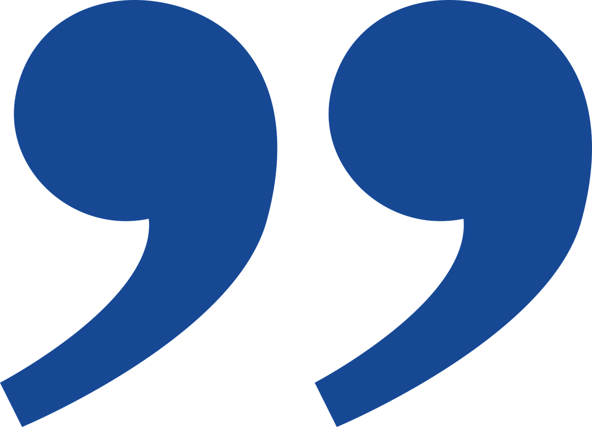

타이머G 이야기
저희는 당신의 소중한 시간과 집중을 응원합니다.
타이머G는 단순한 시간 관리 도구를 넘어, 사용자가 자신의 잠재력을 최대한 발휘하고 목표를 달성할 수 있도록 돕는 동반자입니다. 바쁘고 복잡한 현대 사회에서 집중력을 유지하고 시간을 효율적으로 사용하는 것은 매우 중요합니다. 저희는 이러한 어려움을 해결하고, 사용자가 더 의미 있는 성과를 창출할 수 있도록 지원하고자 합니다.
우리의 미션과 비전

미션 (Mission)
최고의 시간 관리 도구와 유용한 콘텐츠를 제공하여 모든 사용자가 자신의 목표에 집중하고 생산성을 극대화할 수 있도록 돕는다.

비전 (Vision)
집중과 시간 관리가 자연스러운 일상이 되어, 모든 사람이 자신의 잠재력을 실현하고 더 나은 삶을 살아가는 세상을 만든다.
우리가 추구하는 가치
사용자 중심 (User-Centric)
모든 결정과 기능 개발은 사용자의 필요와 경험을 최우선으로 고려합니다.
단순함과 명료함 (Simplicity & Clarity)
복잡함을 덜어내고, 누구나 쉽고 직관적으로 사용할 수 있는 서비스를 제공합니다.
지속적인 성장 (Continuous Growth)
사용자의 피드백을 바탕으로 끊임없이 배우고 개선하며 함께 성장합니다.
만든 사람들 (Our Team)
타이머G는 시간 관리와 생산성에 열정을 가진 사람들에 의해 만들어지고 발전하고 있습니다. 저희는 사용자들이 더 나은 방식으로 시간을 활용할 수 있도록 돕기 위해 노력합니다.
현재는 1인 개발팀으로 운영되고 있으며, 앞으로 더 많은 전문가들과 함께 성장해나갈 계획입니다.